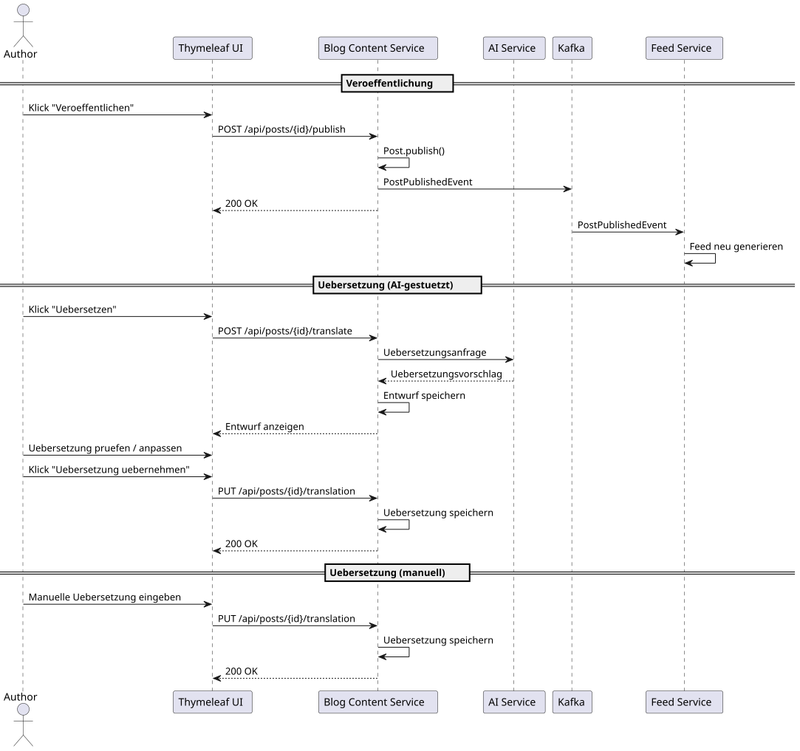
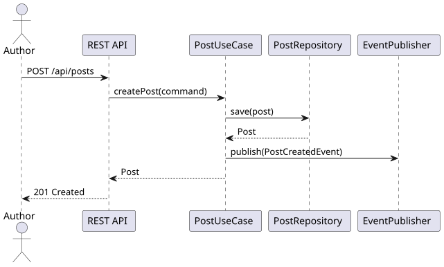
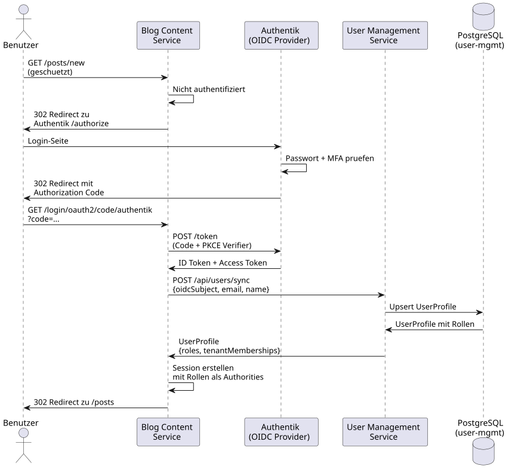

6. Laufzeitsicht
1. Post veröffentlichen und übersetzen
Das Sequenzdiagramm zeigt drei Abläufe, die zentrale Anforderungen abdecken:
-
Veröffentlichung: Autor veröffentlicht einen Post, Feed wird aktualisiert (SWR-002, SWR-008).
-
KI-gestützte Übersetzung: Autor löst Übersetzung aus, prüft den Vorschlag und übernimmt ihn (SWR-004, SWA-006).
-
Manuelle Übersetzung: Autor gibt die Übersetzung direkt ein (SWR-005).

2. Post erstellen (vereinfacht)
Der Ablauf der Post-Erstellung zeigt das Zusammenspiel von REST-Adapter, Application Layer und Domain (SWR-001, SWA-001). Bei erfolgreicher Erstellung wird ein PostCreatedEvent registriert (SWR-009).

3. OIDC Login mit Authentik
Der OIDC-Login-Ablauf zeigt die Authentifizierung ueber Authentik als externem Identity Provider und die anschliessende Synchronisation der Benutzerdaten mit dem User Management Service (SWR-016, SWR-043, SWA-010, ADR-0027):
-
Redirect zu Authentik: Ein nicht-authentifizierter Zugriff auf einen geschuetzten Endpunkt loest den OAuth2 Authorization Code Flow mit PKCE aus.
-
Authentifizierung: Authentik prueft Passwort und optionalen zweiten Faktor (MFA).
-
Token-Austausch: Blog Content Service tauscht den Authorization Code gegen ID Token und Access Token.
-
Profil-Synchronisation: Blog Content Service ruft den User Management Service auf, um das Benutzerprofil zu synchronisieren und Rollen abzufragen.
-
Session: Eine HTTP-Session wird mit den Rollen als Spring Security Authorities erstellt.
